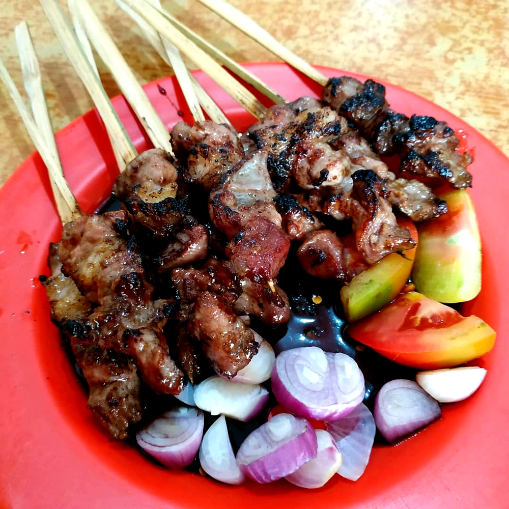

Home
Sate Kambing (Satay Lamb)

Ingredients
Satay Lamb
- 500g lamb / mutton fillet, diced(1cm each side)
- 3 tbsp Indonesian kecap manis
- 2 tbsp oil or melted butter
- 10 pcs bamboo skewers
Spices Paste
- 3 gloves garlic
- 2 tsp roasted coriander
- 1/2 tsp roasted cumin
- 1cm fresh turmeric
- 1/2 tsp pepper powder
- 1 tsp salt or taste
Peanut Sauce
- 2 pc large red chillies, boiled
- 4 pcs small red chillies, boiled
- 1 gloves garlic, boiled
- 1 tsp sugar
- 100g roasted peanut, blended
- 50ml hot water
- 3 tbsp Indonesian sweet soya sauce / kecap manis
- Salt or taste
Directions
- Put all paste ingredients in a mortar till smooth
- Transfer the paste into a bowl, add the kecap manis & oil
- Add the lamb pieces. Stir to mix
- Put about 4-5 pieces lamb on each skewer. Put aside
- For peanut sauce just blend all
- Put raw satay in saucepan or grill pan
- Adjust the taste, if necessary add salt or taste
- Turn them over to grill the other side until both sides half / well cooked as you prefer
- Serve hot with peanut sauce or sambal kecap